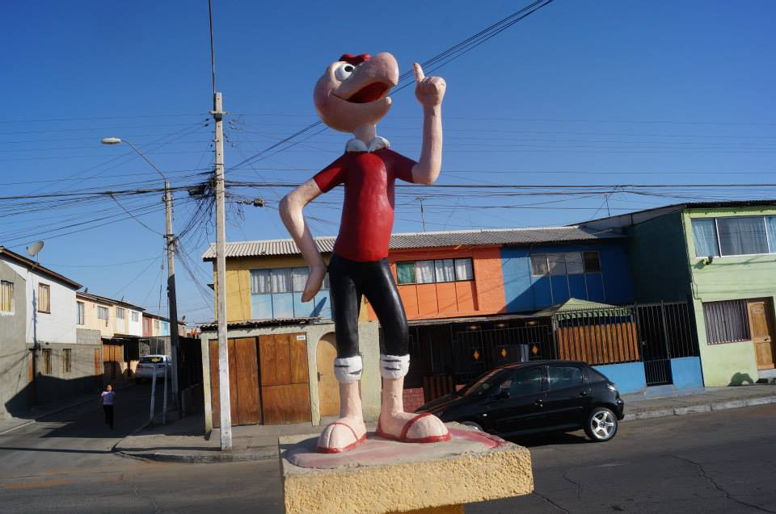

Bienvenido a esta pagina de curiosidades sobre Mejillones. Aqui se te mostrara un listado de 10 curiosidades sobre esta ciudad
Por avenida Andalicán, existe una larga plaza en donde se muestran diversos personajes de condorito, ejemplares como el propio Condorito, Coné, Pepe Cortisona, etc.

La capitanía fue la casa del famoso personaje x
El nombre “Mejillones” viene a ser plural de “mejillón”, un molusco conocido en Chile como “choro” y que se caracteriza por ser un pequeño bivalvo que abunda en las costas del norte del país y que constituyó uno de los alimentos principales de los primitivos habitantes aborígenes del lugar.